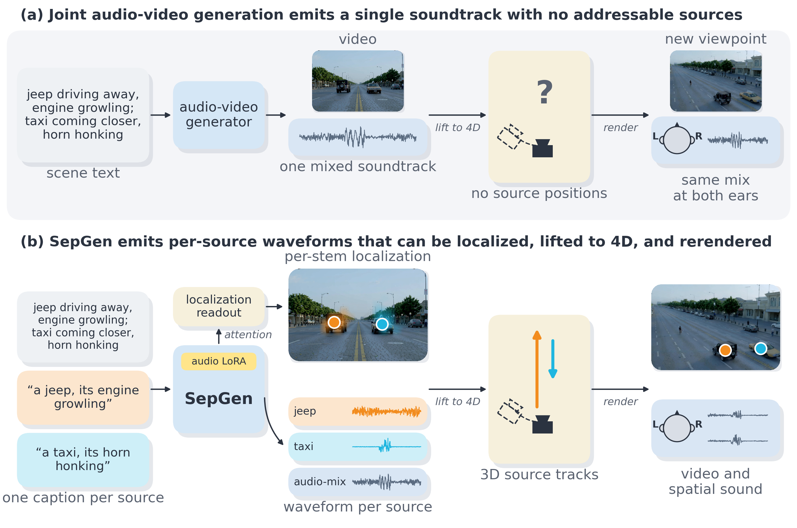
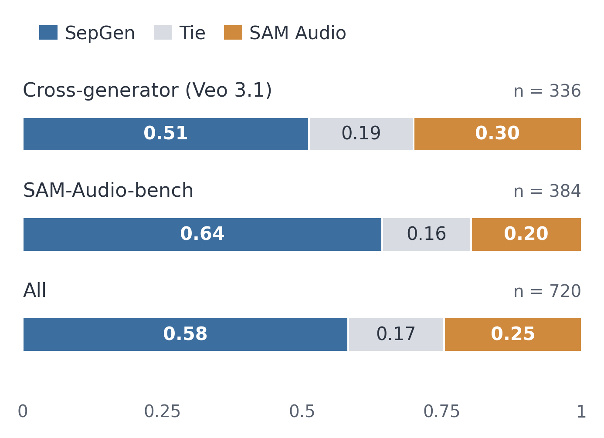
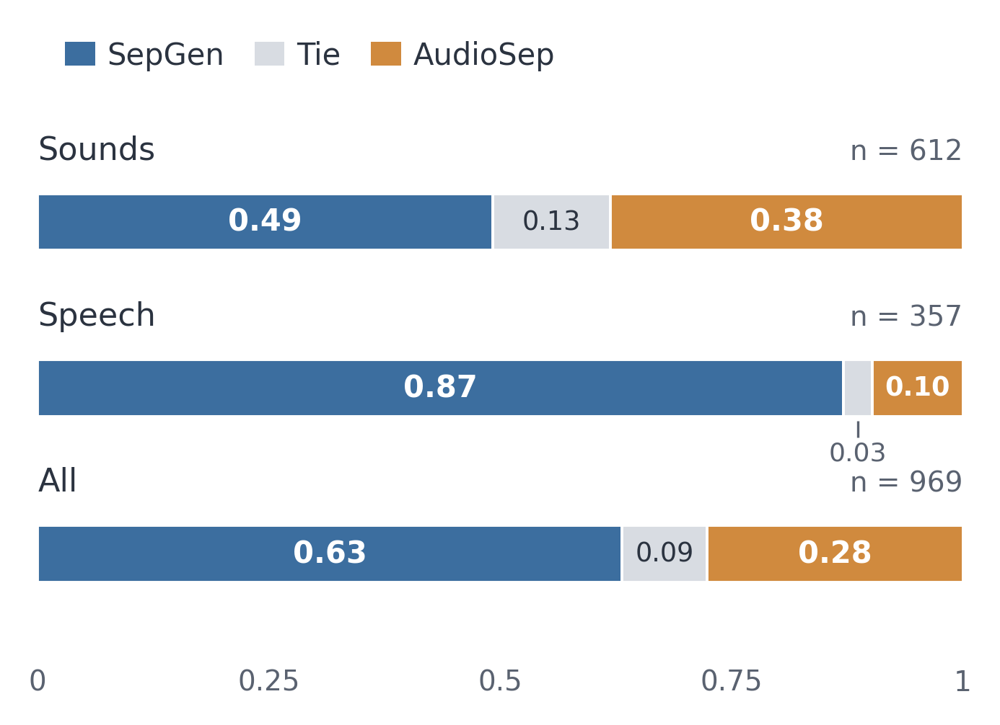

SepGen turns an existing audio-video generator into one that also outputs each described sound separately, in the same run that makes the video and its soundtrack.
The added weights never change the soundtrack the generator already makes. Each sound reads only its own description and is steered away from the other one.
The same weights create sounds from text or pull them out of an existing video. A short extra training round improves generation without hurting separation.
Write one description for the whole scene and one for each sound you want, for example “a jeep engine” and “a taxi honking”.
SepGen adds two audio tracks to a pretrained video generator. In one run it makes the video, the full soundtrack and one track per description, and each track reads only its own description.
Give it an existing video instead. It keeps the real soundtrack fixed, so the two extra tracks become the separated sounds.
Stored benchmark outputs of SepGen next to the cascade baselines, grouped as same-category sources, speech, and sounds. Click any cell to hear that stem over the video.
Means over three seeds (Table 3: five seeds); best in bold, second underlined. In every table, each method is handed the identical mixture and captions. Column names are spelled out in the headers.
Generation: how well each generated sound matches its description (SAM Audio Judge), compared with the best other method
Separation: word error rate for each speaker on the Veo benchmark, compared with the best other method
of listeners preferred SepGen in the generation and separation studies (the other method got 28% and 25%)
Two listening studies, one per mode, with a forced choice between two anonymous candidates and a tie option. Each bar is the share of its n judgements that went to SepGen, to a tie, and to the competitor.


@article{dahan2026sepgen,
title = {SepGen: Multi-Stem Audio-Video Separation and Generation in a Single Model},
author = {Dahan, Aviad and Khatib, Rajaei and Bitton, Yonatan and Szpektor, Idan and Wolf, Lior and Giryes, Raja},
journal = {arXiv preprint arXiv:XXXX.XXXXX},
year = {2026}
}